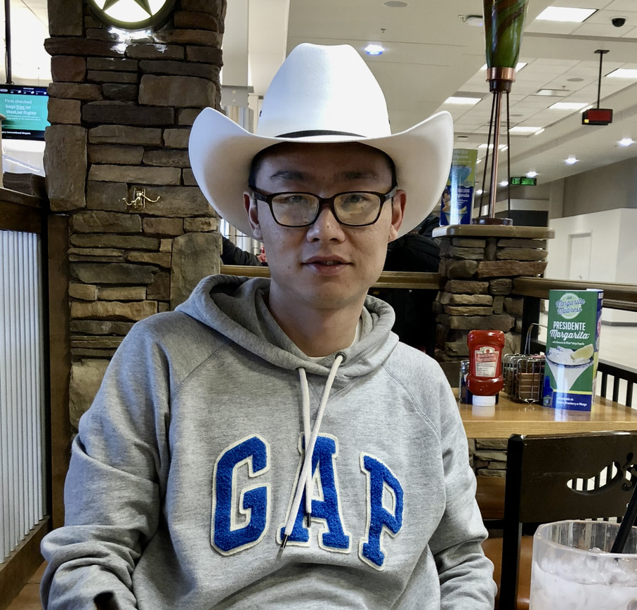

|
 |
Pinzhuo |
I am currently a Research Fellow in the School of Electrical and Electronic Engineering (EEE) at Nanyang Technological University (NTU), working with Prof. Wen. I received my Ph.D. degree from the State Key Laboratory for Novel Software Technology at Nanjing University. My research interests include machine learning, representation learning, and related areas.
[2026] TCSVT *1, RA-L *1
[2025] TMM *2, ICLR *1 , CVPR *1, TNNLS * 1
[2024] TCYB *1 , TOMM *1 , ICASSP *2 , TST *1
[2023] TPAMI *1 , AAAI23 *1 , KBS *1, Neurocomputing , ACCV tutorial *1
[2022] TMM *1 , CGKD2022 优秀学生论文奖 *1, PRICAI *1
[2018-2021] AAAI 20 *1 ，IJCAI20 , TNNLS , FCS , ICASSP18
Kai Chen, Hewei Wang, Pinzhuo Tian, Jing Huo, Taihang Zhen, Yang Gao. Double Buffer Vaccination: Bolstering Immunity against Catastrophic Forgetting in Continual Medical Image Segmentation. IEEE Transactions on Circuits and Systems for Video Technology, 2026.
Zixuan Chen, Junhui Yin, Yangtao Chen, Jing Huo, Pinzhuo Tian, Jieqi Shi, Yiwen Hou, Yinchuan Li, Yang Gao. DeCo: Task decomposition and skill composition for zero-shot generalization in long-horizon 3D manipulationJ. IEEE Robotics and Automation Letters, 2026.
Pinzhuo Tian, Qiubo Ma, Hang Yu, Jie Lu. ReCL: A Plug-and-Play Module for Enhancing Generalized Category Discovery Using Transport-Based Method to Uncover the Relationship in SamplesJ. IEEE Transactions on Neural Networks and Learning Systems, 2025.
Pinzhuo Tian, Shengjie Yang, Hang Yu, Alex C Kot, Pay Attention to the Foreground in Object-Centric Learning, CVPR 25
Pinzhuo Tian, Xiaojie Zhou, Hang Yu, Shaorong Xie, High Specificity Guided Cross-Domain Few-Shot Segmentation, IEEE Transactions on Multimedia, 2025
Yangtao Chen, Zixuan Chen, Junhui Yin, Jing Huo, Pinzhuo Tian, Jieqi Shi, Yang Gao, GravMAD: Grounded Spatial Value Maps Guided Action Diffusion for Generalized 3D Manipulatio, ICLR 25
Xiaojie Zhou, Hang Yu, Shengjie Yang, Jing Huo, Pinzhuo Tian, Learning from Orthogonal Space with Multimodal Large Models for Generalized Few-shot Segmentation, ACM Transactions on Multimedia Computing, Communications and Applications (ACM TOMM), 2025
Jing Huo, Shiyin Jin, Jiashen Li, Pinzhuo Tian, Wenbin Li, Jing Wu, Yukun Kai, Yang Gao, Dictionary Based Generative Adversarial Network for Multi-Collection Style Transfer, IEEE Transactions on Multimedia, 2025
Qiubo Ma, Hang Yu, Yuan Shan, Pinzhuo Tian, Exploiting the Relationship within the Unlabelled Samples by Set Matching for Generalized Category Discovery, ICASSP 25
Kai Chen, Ji Qi, Jing Huo, Pinzhuo Tian, Fanyu Meng, Xi Yang, Yang Gao, A Self-Evolving Framework for Multi-Agent Medical Consultation Based on Large Language Models, ICASSP 25
Zhiyi Fang, Zhuofeng Li, Qingyong Zhang, Changhua Xu, Pinzhuo Tian, Shaorong Xie, Envisioning a Future Beyond Tomorrow with Script Event Stream Prediction, tsinghua science and technology (TST), 2024
Zhenxing Ge, Shangdong Yang, Pinzhuo Tian, Zixuan Chen, Yang Gao, Modeling Rationality: Towards Better Performance Against Unknown Agents in Sequential Games, IEEE Transactions on Cybernetics (TCYB), 2024
Linjian Meng, Zhenxing Ge, Pinzhuo Tian, Bo An, Yang Gao, Deep FTRL-ORW: An Efficient Deep Reinforcement Learning Algorithm for Solving Imperfect Information Extensive-Form Games, AAAI-23
Pinzhuo Tian, Hang Yu, Can we improve meta-learning model in few-shot learning by aligning data distributions. Knowledge-Based Systems (KBS), 2023
Wenbin Li, Ziyi Wang, Xuesong Yang, Chuanqi Dong, Pinzhuo Tian, Tiexin Qin, Jing Huo, Yinghuan Shi, Lei Wang, Yang Gao, Jiebo Luo, LibFewShot: A Comprehensive Library for Few-Shot Learning, IEEE Transactions on Pattern Analysis and Machine Intelligence (TPAMI), 2023
Pinzhuo Tian, Shaorong Xie, An Adversarial Meta-training Framework for Cross-domain Few-Shot Learning , IEEE Transactions on Multimedia (TMM), 2022
Zhenxing Ge, Shuai Xiang, Pinzhuo Tian, Yang Gao, 基于深度强化学习的惯蛋扑克博弈求解, CGCKD2022, 优秀学生论文奖
Chao Li, Yujing Hu, Pinzhuo Tian, Shaokang Dong, and Yang Gao, DDMA: Discrepancy-Driven Multi-Agent Reinforcement Learning, PRICAI 22
Pinzhuo Tian, Wenbin Li, YangGao, Consistent Meta Regularization for Better Meta-knowledge in Few-shot Learning, IEEE Transactions on Neural Networks and Learning Systems (TNNLS), 2021
Pinzhuo Tian, YangGao, Improving Meta-Learning Model via Meta-contrastive Loss, Frontiers of Computer Science (FCS), 2021
Pinzhuo Tian, Lei Qi, Shaokang Dong, Yinghua She, YangGao, Consistent MetaReg: Alleviating Intra-task Discrepancy for Better Meta-knowledge, IJCAI 20
Pinzhuo Tian, Zhangkai Wu, Lei Qi, Lei Wang, Yinghuan Shi, Yang Gao, Differentiable Meta-Learning Model for Few-Shot Semantic Segmentation , AAAI20
Pinzhuo Tian, Lei Qi, Yinghuan Shi, Luping Zhou, Yang Gao, Dinggang Shen, A Novel Image-Specific Transfer Approach for Prostate Segmentation in MR Images, ICASSP 18